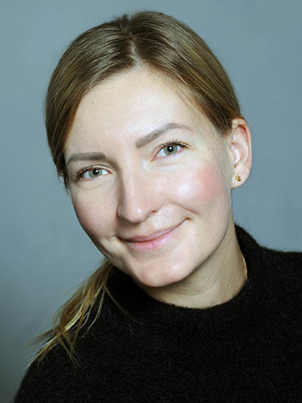

Юлия Иванова

Личная информация
Мне 36 лет
До 24.02.2022 жила в Одессе, Украина
Проживаю в Германии, Франкйурт 2,5 года
Закончила школу немецкого языка Berlitz, уровень В2
Работаю в немецком ресторане "Balthasar"
Заканчиваю курс С1 по немецкому языку
Мои сильные качества:
Высокая обучаемость
Умение позитивно подходить к сложным задачам
Быстрая адаптивность
Мое хобби:
fly stretching и кулинария